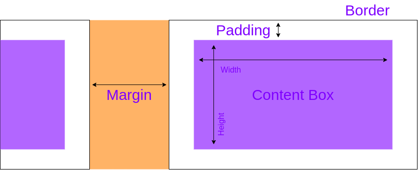
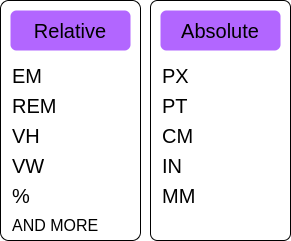

The Box Model Diagram
Box Model: Width & Height
The box model is the idea that everything in css is a box and those box's have a couple of different properties. When looking at the diagram above we can see the core pieces of what makes up the box's. The inner content box, is where the actual content will be,next to that is padding, then a border and then margin which is completely outside the box. The two properties that control the inner content box is width & height.
Looking at the diagram above you see the area width and height controls.
Box Model: Border & Border-Radius
- border: width / style / color
-
border-width:
- border-top-width
- border-right-width
- border-bottom-width
- border-left-width
-
border-style:
- border-top-style
- border-right-style
- border-bottom-style
- border-left-style
- and more!
-
border-color:
- border-top-color
- border-right-color
- border-bottom-color
- border-left-color
- and more!
-
border-radius:
- border-top-left-radius
- border-top-right-radius
- border-bottom-left-radius
- border-bottom-right-radius
-
box-sizing:
- box-sizing: border-box
- box-sizing: content-box
Border has a shorthand property called border:, however it does have dozens of other border related properties that we can control, as illustrated above in the list. Properties such as change the left, top, right or bottom border independantly. We can also set the border radius to have rounded corners. Looking once again at the above diagram, we see the border is on the edge of the box model, basically a border is around the element.
Take note of the property box-sizing. When you set a box to be 200px wide, and you place a border of 5px around it, your width just became 210px wide. With the box-sizing property, you can change that to a value of border-box, which will keep the orginal width set, but however subtract.
You can use different size units such as px, em, rem, % .. one common one is to set a square box at 50% border radius to make a circle. An exmaple of this would be like so:
- div {
width: 200px;
height: 200px;
border-radius: 50%;
}
Box Model: Padding
-
padding:
- padding-top
- padding-right
- padding-bottom
- padding-left
The next piece we need to cover is padding, padding is the space between the content box and the border. Basically if you want to make some content breath a little you can use padding to solve that. An example can be a button needing a little bit of space between the border and text.
There is a padding shothand property called padding: that unlike the border, has a few different patterns depending on the amount of input. As an example:
-
padding: 5%;
- 5% padding for all sides
-
padding: 10px;
- 10px padding for all sides
-
pading: 10px 20px;
- 10px padding for Top & Bottom
- 20px padding for Left & Right
-
padding: 10px 3% 20px;
- 10px padding for top
- 3% padding for left & right
- 20px padding for bottom
-
padding: 1em 3px 30px 5px;
- 1em padding for top
- 3px padding for right
- 30 padding for bottom
- 5px padding for left
Looking at the patterns above, the more common one will be the last and remember that from top it moves clock-wise all the way to left.
Box Model: Margin
-
margin:
- margin-top
- margin-right
- margin-bottom
- margin-left
The remaining piece of the box model is margin. Looking at the diagram above margin is the space between two elements. In a new HTML document you can see a small margin around the page, a lot of devs remove this so that they get the full width there is to offer. Margin also has a shorthand property that works similar to padding. As an example:
-
margin: 1em;
margin: -3px;
- Apply margin for all sides
-
margin: 5% auto;
- 5% vertical
- auto horizontal
-
margin: 1em auto 2em;
- 1em top
- auto horizontal
- 2em bottom
-
margin: 2px 1em 0 auto;
- 2px margin for top
- 1em margin for right
- 0 margin for bottom
- auto margin for left
-
-- Global Value --
- margin: inherit;
- margin: initial;
- margin: revert;
- margin: unset;
The Display Property
-
display:
- display: inline;
- display: block;
- display: inline-block;
The display property allows us to change the behavior of how certain elements behave in the sense of changing their default inline or block property. So we know that inline elements can co-exist with other inline elements on one line, whereas block elements take up the whole row. When it comes to the recent properties we just learn't, it's important to know inline and block act differently.
Width and Height are not respected properties when it comes to inline element, however padding and margin are respected horizontally though not vertically. Whereas block elements do respect the above properties.
This brings us to the display property of inline-block, this allows us to make element behave like inline as well as blocks. Therefor width & height are respected while elements behave like both inline and block.
CSS Units Revisited
Looking at the above diagram pixels or px is the most used absolute unit. Though on the relative side its important to understand percentages, em's and rem's.
% Percentages
Percentages are relative to either its parent element or font-size. An example of this can as so:
-
width: 50%;
- Half the width of the parent
-
line-height: 50%;
- Half the font-size of the element itself
em's
When it comes to em units, different properties will be relative to different aspects. For example when dealing with font-size, its relative will be the parent default or parent value of font-size. Therefor 1em will be equal to the same amount, while 2em will be double the amount. em units on properties other than font-size will be relative to the font-size of the current element.
rem's
rem units sizes will always be relative to the font-size of the root html element. Working in a similair manner, 1rem will remain equal to while 2rem will be double.